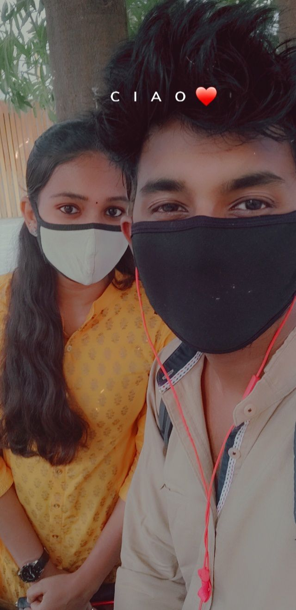

A journey that began with a plate of biriyani...
And ended with me losing my heart and peace to you forever.
The Flavor of First Sight
They say love happens in mysterious ways, but for us, it was seasoned with spices.
I walked into that wedding with only one mission: the food counter.
But amidst the steam of the biriyani and the chaos of the guests,
my eyes caught yours. The aroma faded, the noise died down,
and suddenly, the biriyani didn't seem like the best thing in the room anymore.
A Spark in a Question
“Where did you get your tattoo?”
It was such a simple opening, but the way you looked at me changed the air.
Your confidence was magnetic; your smile was a trap I happily fell into.
In that moment, 'Infinity' stopped being just a design on skin—
it became the duration I wanted to spend by your side.

Digital Echoes & 3 AM Hearts
The blue glow of Instagram became our little sanctuary.
What started as casual story replies turned into paragraphs of thoughts.
“Going to sleep now” usually meant another two hours of talking.
I found myself checking my phone every minute, addicted to the way
you understood the parts of me I never even mentioned.
The Beauty of Stolen Seconds
College wasn’t about the lectures; it was about the 'side gaps.'
Those hidden corners where we shared quick glances and heavy silences.
The world saw two people walking past each other,
but we felt the electricity of accidental hand touches that were entirely on purpose.
Those small, stolen moments built the foundation of our forever.
When Time Stood Still
Then came the storm. The world tried to silence us. No texts. No calls. No way to reach you.
But they underestimated our stubbornness. We had neighbors who became allies,
friends who played messengers, and that legendary night where I had to hijack Grandmother’s phone just to hear your breath on the other side.
We proved that no wall is high enough when two hearts refuse to let go.
29 August 2026 — The Vow
7:00 AM. The air was cool, the temple bells were rhythmic, and my heart was racing.
Under the sacred witness of the morning light, the struggle ended and our life began.
When I tied that knot, it wasn't just a tradition—it was a promise
that I would protect your peace as fiercely as you protected our love.
Across Borders, Hand in Hand
From the vibrant streets of Malaysia to the golden sunsets of Bali.
Exploring the world with you felt like seeing colors for the first time.
Waking up in a foreign land and seeing your face next to mine
reminded me that 'home' isn't a place with an address—it's you.
The Chaos We Call Home
It’s not just the grand moments; it’s the beautiful mess in between.
Your random mood swings, your adorable jealousy, and that stubborn streak
that I’ve secretly grown to love.
Our endless gossip, our shared silence, and the way you know exactly
what I’m thinking without me saying a word. That’s the real magic.
To Infinity & Beyond
This isn't the end of the story; it's just the prologue.
To more flights, more fights, more midnight snacks, and a million more memories.
We started as strangers chasing biriyani,
and now we are soulmates chasing the horizon.